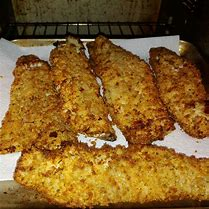

Air-Fried Crumbed Fish

Decription
"Indulge in the flavors of crispy , golden-brown goodness with our air-fried crumbed fish.
This healthier twist on a classic favorite features tender fish fillets coated in a flavorful breadcrumb mixture and
cooked to perfection in the air fryer. Each bite delivers a satisfying crunch, and the fish remains moist and flaky inside.
This dish is a guilt-free pleasure for seafood lovers and a family-friendly option that's quick and easy to prepare.
Serve with your choice of dipping sauce or a squeeze of fresh lemon for a truly delicious experience.
Ingredients
- 1 cup dry bread crumbs
- 1/4 cup vegetable oil
- 4 flounder fillets
- 1 egg, beaten
- 1 lemon, sliced
Steps
- Preheat an air fryer to 350 degrees F (180 degrees C).
- Place bread crumbs and oil into a shallow bowl; stir until mixture becomes loose and crumbly.
- Dip fish fillets into egg; shake off any excess. Dip fillets into bread crumb mixture; coat evenly and fully.
- Lay coated fillets gently in the air fryer basket; cook in the preheated air fryer until fish flakes easily with a fork,
about 12 minutes.
- Garnish with lemon slices; serve.